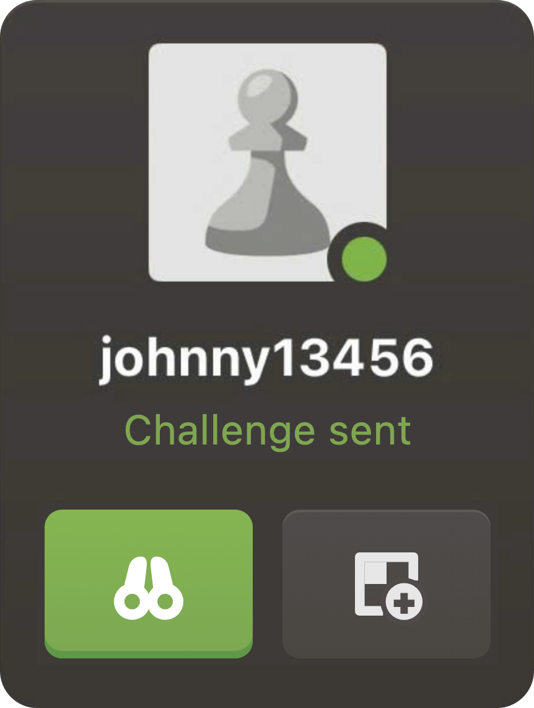
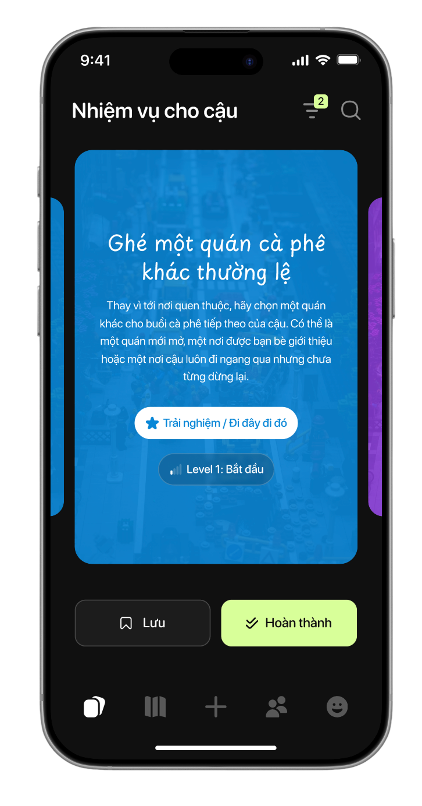
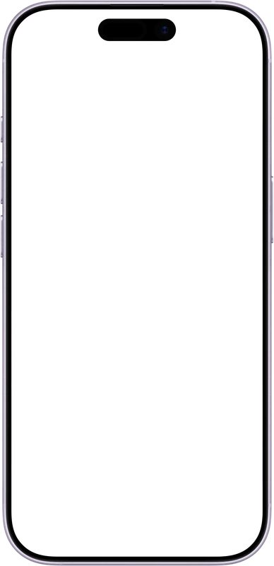
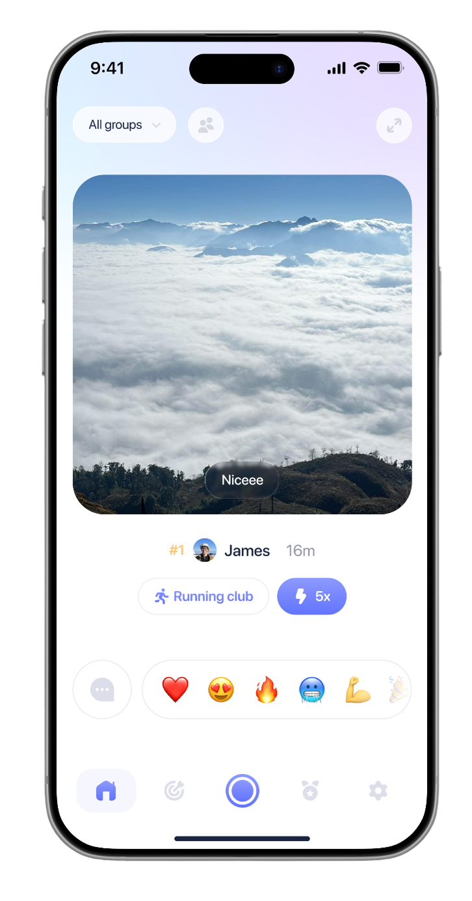
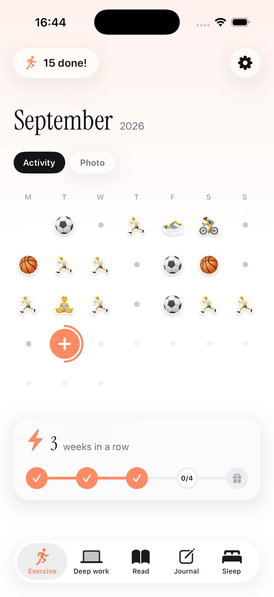
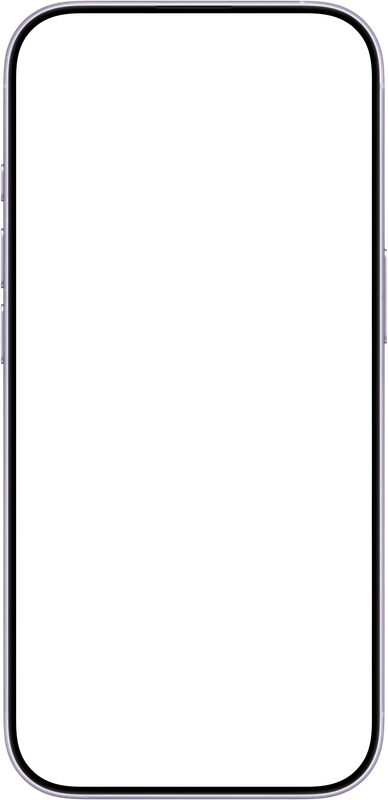
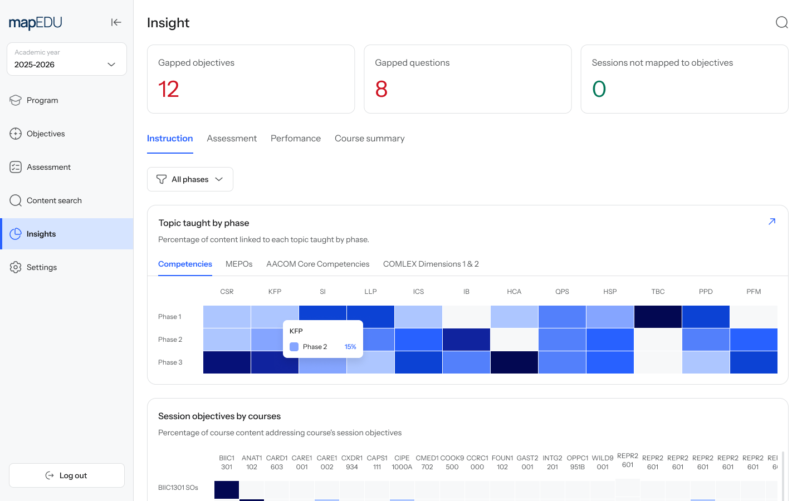
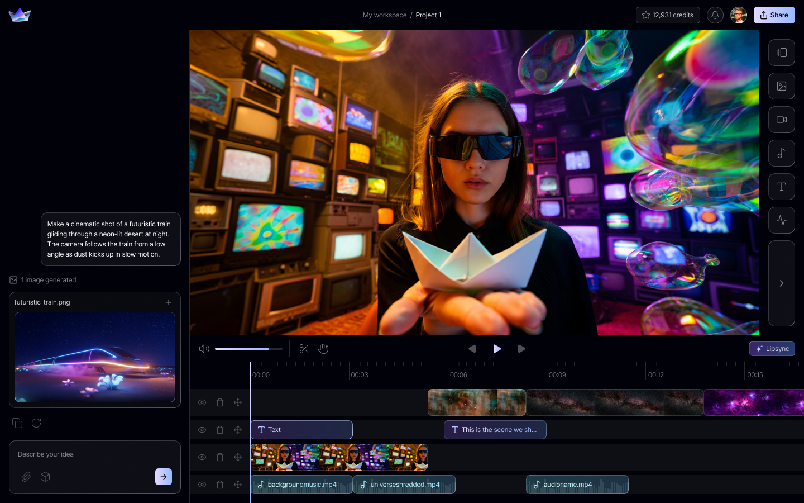
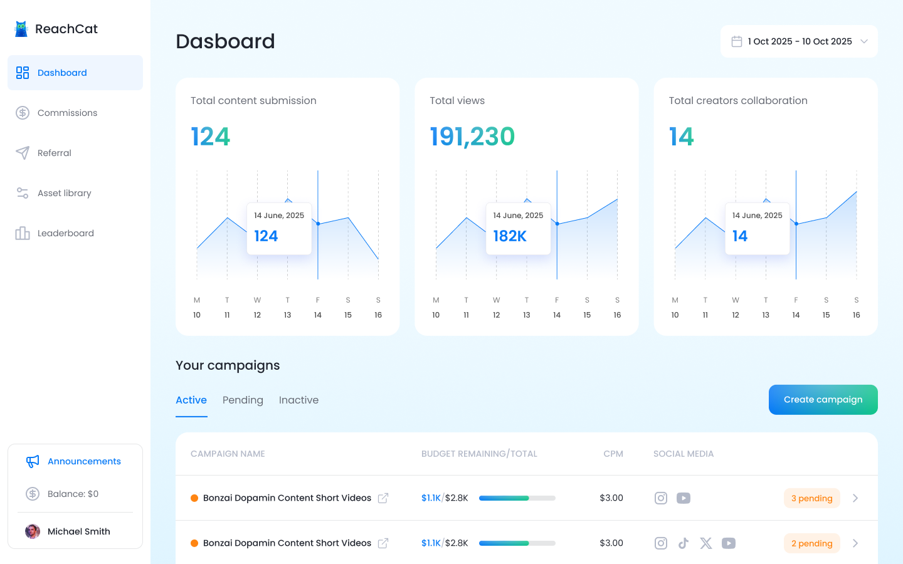
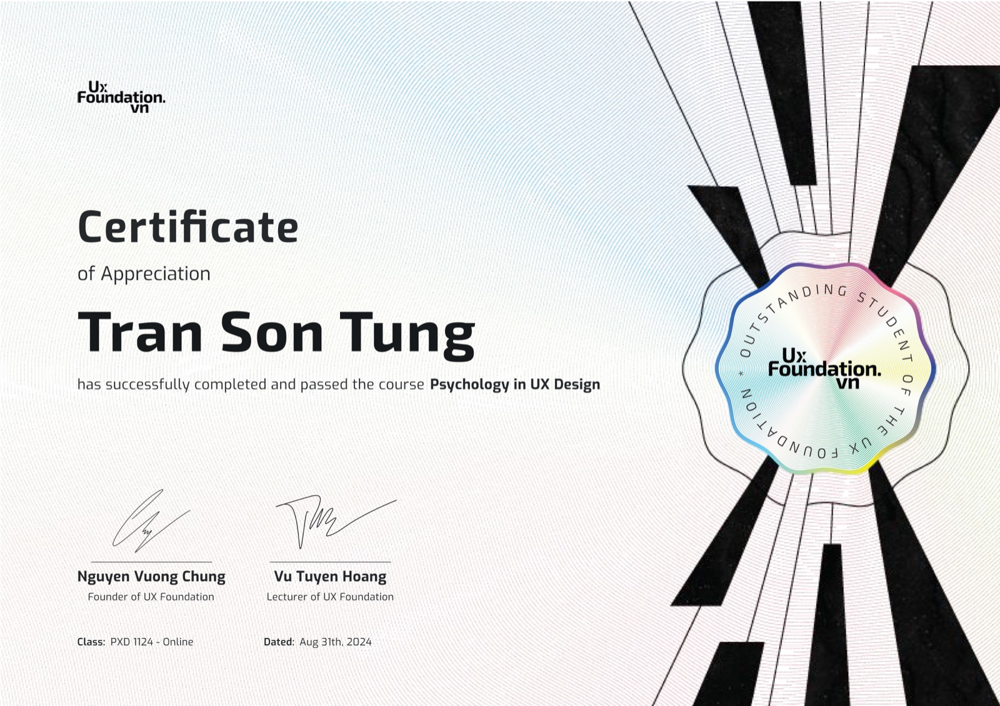

Product Designer - AI Products
James likes designing stuff,
yapping about psychology,
playing games.
I'm a dedicated chess player2155 peak rapid2056 peak blitz47 day streak
A Chess.com case study
Challenging a friend who is already playing
Challenge is unavailable at the moment you most want it - when a friend is in a game. So it waits its turn instead: Play next.
Read experiment
Play my bot
A bot trained on 4,249 of my own Chess.com games.
I self-build apps because it's so fun


Questie
Side quests for a better life

AllyUp
Habits with friends


Dots
Celebrate everyday win
I have designed AI products for 4 years

mapEDU
Improve curriculum mapping with AI

ARQ
Create production-ready movies with AI

Reach.cat
Personalized outreach at scale with AI
More products / brands I had the chance to work with / on
I'm grateful 🙌

I love learning - here are my certificates

My hobbies at free time
Books I read

Piano
I heal by playing music
ZXCVBNMRTYUIOP
SDGHJ56890
Sports
To recharge myself